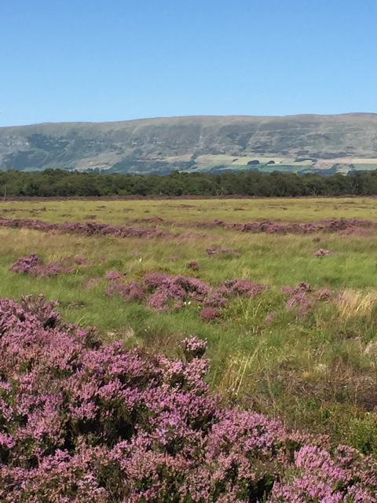

<div class="peatlands-and-img">
    <div class="peatlands-wrapper">
        <h2>Peatlands</h2>
        <p><strong>Lenzie Moss Peatland Restoration Project</strong></p>
        <p>Work to clear birch scrub that was encroaching on the bog, level the bunds (the ridges between the channels of cut peat left over from the commercial extraction of peat last century), and install additional dams, was completed in 2016. This was financially supported by SNH in furtherance of the Scottish Governments policy of protecting peat bogs.</p>

        <p><strong>The National Peatland Plan</strong></p>

        <p>We can all benefit from a recently published fresh vision for Scotland's peatlands.
    The National Peatland Plan highlights actions to protect, manage and restore these precious natural resources.
    The plan covers the range of public benefits resultant from well-managed peatlands and focuses on work calculated to support development planning, conservation and land management activities.
    Its publication follows a public consultation in which many helpful comments came from a range of organisations and individuals.</p>

    <a href="https://www.nature.scot/doc/scotlands-national-peatland-plan-working-our-future">Read more</a>
    </div>
    
</div>

